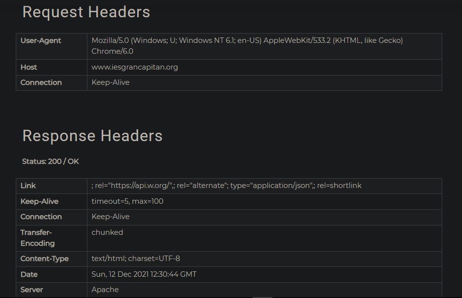

1. ¿Cuál es el código devuelto por el servidor?
- Status: 200 / OK.
2. ¿Qué método HTTP se ha utilizado?
- Se ha utilizado el metodo GET.
3. ¿Cuál es el lenguaje de la página?
- El lenguaje que utiliza es HTML.
4. ¿Cuál es el servidor web instalado?
- El servidor web instalado es el Apache.
5. ¿Qué versión de PHP está utilizando el servidor?
- La version PHP 7.3
6. ¿Qué sistema operativo utiliza el servidor?
- Utiliza el sistema operativo CentOS.
